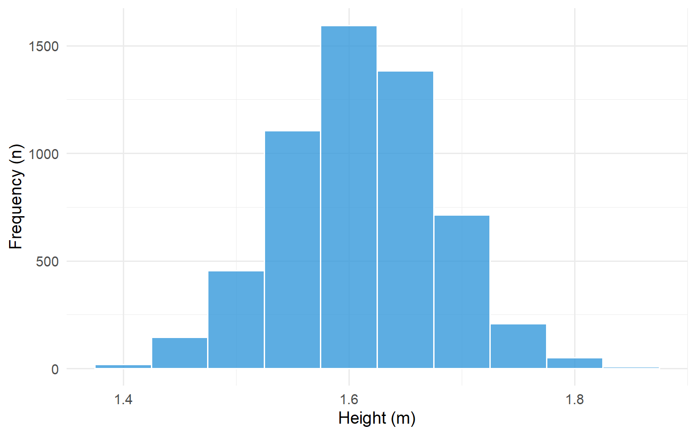
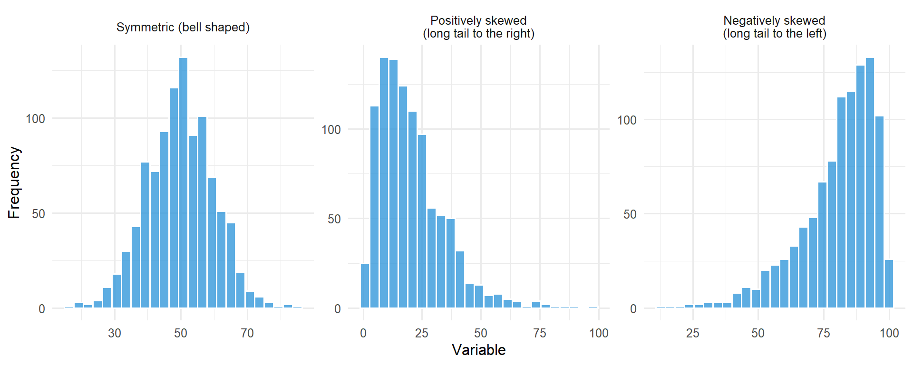

The use of graphics and descriptive statistics is an important step to identifying the main features of data, for detecting outliers, and identifying data which has been recorded incorrectly.
Outliers are extreme observations which are not consistent with the rest of the data. The presence of outliers can distort statistical techniques.
5.2 Frequency Distribution Tables
A count of the number of times something occurs is called a frequency count.
Within a data set we may list the data values and count how many times each value occurs. A table with the set of data values and frequency of each value is called a frequency distribution table.
code
# Create the brain metastases databrain_mets <-tibble(`Number of brain metastases`=c("1", "2", "3 or more", "Total"),`Number of patients (n)`=c(19, 4, 9, 32),`Percent of patients (%)`=c(59.4, 12.5, 28.1, 100))brain_mets |>kable() |>kable_styling(bootstrap_options =c("striped", "hover"))
Table 5.1: Number of brain metastases among renal cancer patients treated with cranial radiotherapy
Number of brain metastases
Number of patients (n)
Percent of patients (%)
1
19
59.4
2
4
12.5
3 or more
9
28.1
Total
32
100.0
The most frequent category is called the mode. In the above table the mode would be 1 metastasis, which occurred in a total of 19 renal cancer patients.
The percentages in a frequency distribution table are sometimes expressed as relative frequencies or proportions. In the above table, the proportions would be 0.594, 0.125, 0.281.
Grouped Frequency Tables
When the set of potential data values is large the data are organised in groups (examples – age groups 20-29, 30-39, 40-49, 50-59, 60-69 etc). A count of the number of data values in each group (group frequency) is made. The frequency distribution table will then include the data groupings and the frequency of each group.
5.3 Graphs for Numeric Data
Histograms
A histogram consists of a set of rectangles which present the frequency distribution of a variable. It allows a visualisation of the shape of the data.
code
# Create simple histogram anatomy diagramset.seed(100)sample_data <-tibble(x =c(2.5, 3.5, 4.5, 5.5, 6.5))sample_freq <-c(3, 7, 12, 8, 4)ggplot() +geom_col(aes(x = sample_data$x, y = sample_freq),width =0.9, fill ="#3498db", colour ="#2980b9", alpha =0.7) +# Y-axis label annotationannotate("segment", x =1.5, xend =1.5, y =0, yend =12,arrow =arrow(length =unit(0.3, "cm"), ends ="both"), colour ="#e74c3c", linewidth =1) +annotate("text", x =0.8, y =6, label ="Frequency\n(y-axis)", colour ="#e74c3c", size =3.5, fontface ="bold") +# X-axis label annotationannotate("segment", x =2, xend =7, y =-1.5, yend =-1.5,arrow =arrow(length =unit(0.3, "cm"), ends ="both"), colour ="#27ae60", linewidth =1) +annotate("text", x =4.5, y =-2.5, label ="Variable values (x-axis)", colour ="#27ae60", size =3.5, fontface ="bold") +# Bar width annotationannotate("segment", x =4.05, xend =4.95, y =13, yend =13,arrow =arrow(length =unit(0.2, "cm"), ends ="both"), colour ="#8e44ad", linewidth =0.8) +annotate("text", x =4.5, y =13.8, label ="Group width", colour ="#8e44ad", size =3, fontface ="bold") +# Midpoint annotationannotate("point", x =4.5, y =0, colour ="#e67e22", size =3) +annotate("segment", x =4.5, xend =4.5, y =0, yend =-0.8,colour ="#e67e22", linewidth =0.8, linetype ="dashed") +annotate("text", x =5.8, y =0.5, label ="Midpoint", colour ="#e67e22", size =3, fontface ="bold") +annotate("segment", x =5.3, xend =4.6, y =0.5, yend =0.1,arrow =arrow(length =unit(0.15, "cm")), colour ="#e67e22", linewidth =0.6) +labs(x ="", y ="") +scale_y_continuous(limits =c(-3, 15), breaks =seq(0, 12, 3)) +scale_x_continuous(limits =c(0.5, 8), breaks = sample_data$x) +theme_minimal(base_size =12) +theme(panel.grid.minor =element_blank())
Figure 5.1: Anatomy of a histogram showing key components
code
# Generate synthetic height data (women, approximately normal)set.seed(123)heights <-tibble(height =rnorm(5682, mean =1.61, sd =0.07))ggplot(heights, aes(x = height)) +geom_histogram(binwidth =0.05, fill ="#3498db", colour ="white", alpha =0.8) +labs(x ="Height (m)", y ="Frequency (n)") +scale_x_continuous(breaks =seq(1.2, 2.0, 0.2)) +theme_minimal(base_size =14)

Figure 5.2: Histogram of the heights of 5,682 women aged 25-64
The histogram above shows that the most frequent grouping of heights occurs at 1.6-1.65 m. There is a tendency for the bars of the histogram to cluster around this central modal group in a symmetric fashion. This is a classic example of a Normal distribution which displays a symmetric bell shape.
Not all histograms are symmetric; skewness can exist in the distribution of values.
code
set.seed(42)# Symmetricsymmetric <-tibble(x =rnorm(1000, 50, 10), type ="Symmetric (bell shaped)")# Positively skewed (long right tail)positive_skew <-tibble(x =rgamma(1000, shape =2, scale =10), type ="Positively skewed\n(long tail to the right)")# Negatively skewed (long left tail)negative_skew <-tibble(x =100-rgamma(1000, shape =2, scale =10), type ="Negatively skewed\n(long tail to the left)")all_data <-bind_rows(symmetric, positive_skew, negative_skew)all_data$type <-factor(all_data$type, levels =c("Symmetric (bell shaped)", "Positively skewed\n(long tail to the right)","Negatively skewed\n(long tail to the left)"))ggplot(all_data, aes(x = x)) +geom_histogram(bins =25, fill ="#3498db", colour ="white", alpha =0.8) +facet_wrap(~type, scales ="free") +labs(x ="Variable", y ="Frequency") +theme_minimal(base_size =12)

Figure 5.3: Examples of symmetric, positively skewed, and negatively skewed distributions
Dot Plots
Dot plots are a simple method of conveying as much information as possible by showing all of the data. It retains individual subject values and clearly demonstrates differences between groups. An additional advantage is that outliers will be detected.
Figure 5.4: PSA levels before treatment and at week 18 among men who received SABR for prostate cancer
Box Plots
A boxplot is used for discrete and continuous data. It indicates 5 important statistics which describe the distribution of observations:
Minimum value
Lower quartile (Q1) - 25% of data values below this line
Median (Q2) - 50% of data values below this line
Upper quartile (Q3) - 75% of data values below this line
Maximum value
The median is the middle observation in a set of data. 50% of the sample lie below, and 50% lie above the median. It can be seen from the figure that 50% of the data sample lie between the lower quartile (Q1) and the upper quartile (Q3).
Figure 5.5: Pre-treatment neutrophil-lymphocyte ratio in men and women who received SABR for lung cancer
5.4 Graphs for Bivariate Continuous Data
Scatterplots
Scatterplots show the relationship between two numeric variables measured on the same individuals. The values of one variable appear on the horizontal axis, and the values of the other variable appear on the vertical axis. Each individual in the data appears as a point in the plot.
Two variables are positively associated when higher values of one variable tend to accompany higher values of the other, and lower values tend to occur together.
Two variables are negatively associated when higher values of one variable tend to accompany lower values of the other.
Figure 5.6: Scatterplot showing relationship between platelets and white blood cell counts
The scatterplot above shows a positive association between platelets and white blood cell counts. Here’s another example showing the relationship between neutrophils and white blood cells:
Figure 5.7: Scatterplot showing relationship between neutrophils and white blood cell counts
This scatterplot demonstrates a strong positive association - as neutrophil counts increase, white blood cell counts tend to increase as well. The dashed line shows the linear trend in the data.
5.5 Graphs for Categorical Data
Bar Charts
Bar charts are typically used for categorical data (but can be employed for discrete numerical data). Data can be nominal or ordinal.
code
# Create bar chart anatomy diagramcategory_data <-tibble(category =factor(c("A", "B", "C", "D"), levels =c("A", "B", "C", "D")),frequency =c(5, 12, 8, 15))ggplot(category_data, aes(x = category, y = frequency)) +geom_col(fill ="#3498db", colour ="#2980b9", alpha =0.7, width =0.7) +# Y-axis annotationannotate("segment", x =0.3, xend =0.3, y =0, yend =15,arrow =arrow(length =unit(0.3, "cm"), ends ="both"), colour ="#e74c3c", linewidth =1) +annotate("text", x =0.1, y =7.5, label ="Frequency\n(y-axis)", colour ="#e74c3c", size =3.5, fontface ="bold", hjust =0.5) +# X-axis annotationannotate("segment", x =0.5, xend =4.5, y =-2, yend =-2,arrow =arrow(length =unit(0.3, "cm"), ends ="both"), colour ="#27ae60", linewidth =1) +annotate("text", x =2.5, y =-3.2, label ="Categories (x-axis)", colour ="#27ae60", size =3.5, fontface ="bold") +# Gap annotationannotate("segment", x =1.35, xend =1.65, y =16.5, yend =16.5,arrow =arrow(length =unit(0.2, "cm"), ends ="both"), colour ="#8e44ad", linewidth =0.8) +annotate("text", x =1.5, y =17.5, label ="Gap between bars\n(categorical data)", colour ="#8e44ad", size =3, fontface ="bold") +# Bar label annotationannotate("text", x =4, y =15/2, label ="Bar height =\nfrequency", colour ="#e67e22", size =3, fontface ="bold") +annotate("segment", x =3.5, xend =4, y =15/2, yend =15,arrow =arrow(length =unit(0.15, "cm")), colour ="#e67e22", linewidth =0.6) +annotate("segment", x =3.5, xend =4, y =15/2, yend =0,arrow =arrow(length =unit(0.15, "cm")), colour ="#e67e22", linewidth =0.6) +labs(x ="", y ="") +scale_y_continuous(limits =c(-4, 19), breaks =seq(0, 15, 5)) +theme_minimal(base_size =12) +theme(panel.grid.minor =element_blank())
Figure 5.8: Anatomy of a bar chart showing key components
Figure 5.9: Clinical stage among 93 radical radiotherapy NSCLC patients
Pie Charts
Pie charts illustrate nominal data. Each slice of the pie represents a category. The size of the slice is proportional to the relative frequency of that category. It is best utilised with 3-5 categories.
Figure 5.10: Tumour location among 93 patients who received radical radiotherapy for lung cancer
5.6 Tables and Graphs for Bivariate Categorical Data
Contingency Tables
When the interest is in the relationship between two qualitative variables a contingency table (a cross-tabulation) is created. This has the categories for one variable as rows and the categories of the other variable as columns. Each cell of the table has a count of the number of individuals in both categories.
The following example concerns the two-year follow-up of 42 men and 60 women following stereotactic radiotherapy for lung cancer. In total 25 patients had died and 77 were still alive at the two-year follow-up.
code
contingency <-tibble(`Status at two years`=c("Alive", "Died", "Total"),`Women (n)`=c(48, 12, 60),`Men (n)`=c(29, 13, 42),`Total (n)`=c(77, 25, 102))contingency |>kable() |>kable_styling(bootstrap_options =c("striped", "hover"))
Table 5.2: Cross-tabulation of status at two years by sex
Status at two years
Women (n)
Men (n)
Total (n)
Alive
48
29
77
Died
12
13
25
Total
60
42
102
Grouped Bar Charts
Grouped bar charts are useful for displaying contingency table data visually.
code
grouped_data <-tibble(sex =rep(c("Women", "Men"), each =2),status =rep(c("Alive", "Died"), 2),count =c(48, 12, 29, 13))ggplot(grouped_data, aes(x = sex, y = count, fill = status)) +geom_col(position ="dodge", alpha =0.8) +scale_fill_manual(values =c("Alive"="#27ae60", "Died"="#e74c3c")) +labs(x ="", y ="Number of patients", fill ="Status at 2 years") +theme_minimal(base_size =14)
Figure 5.11: Status at two years by sex following stereotactic radiotherapy for lung cancer